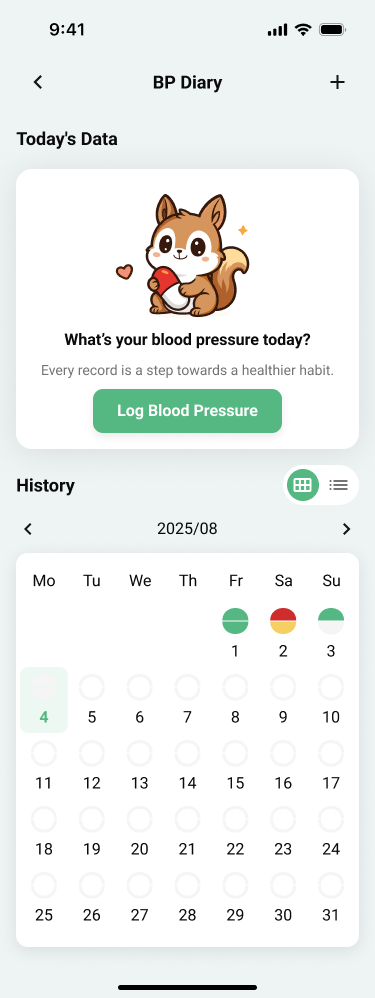
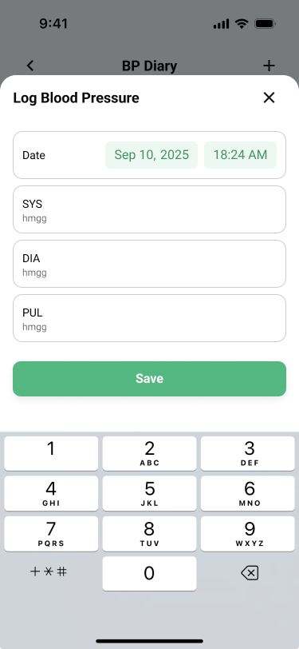
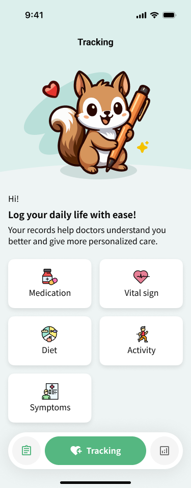
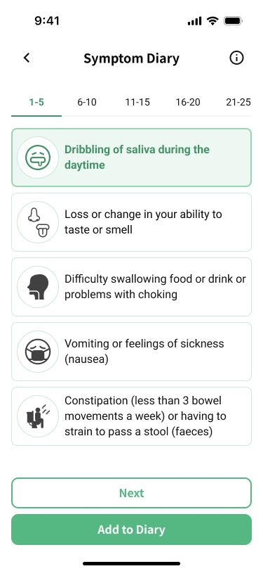
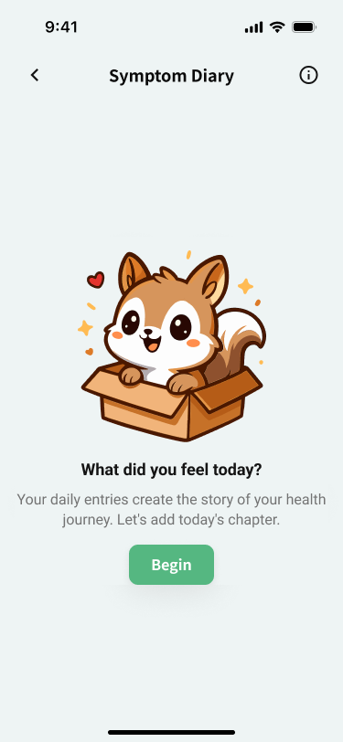
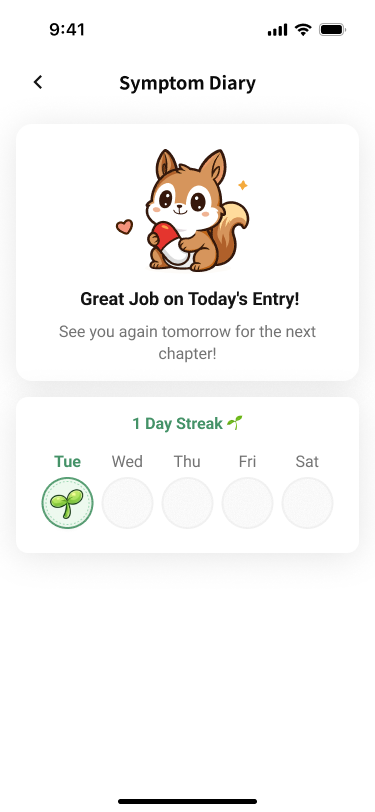
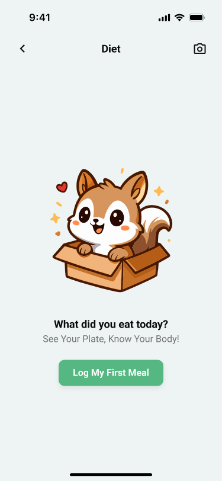
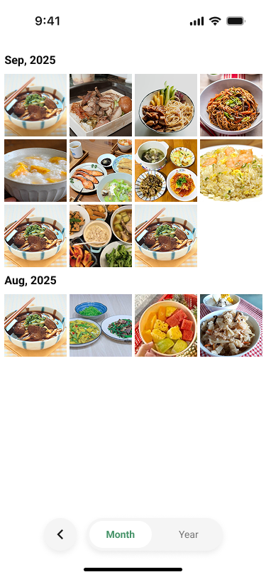

使用者流程
流程 A — 登入與醫師連動
開啟 App →
顯示 QR Code →
醫師用後台掃描 →
帳號自動綁定 →
進入主頁

流程 B — 每日問卷填寫
主頁提示 →
Start Assessment →
超大字體逐題填寫 →
Submit →
慶祝動畫 →
引導進入症狀紀錄

介面流程 C — 血壓記錄
Tracking →
BP Diary →
Log Blood Pressure →
輸入 SYS/DIA/PUL →
Save →
查看月曆（綠/黃/紅色點）


介面流程 D — 症狀紀錄
Tracking →
Symptoms →
分頁症狀清單（30+ 症狀）→
Follow-up 追問 →
Add to Diary →
Streak + 植物生長動畫




介面流程 E — 飲食記錄
Tracking →
Diet →
拍照或文字記錄 →
輸入餐點名稱 →
Gallery 查看歷史

